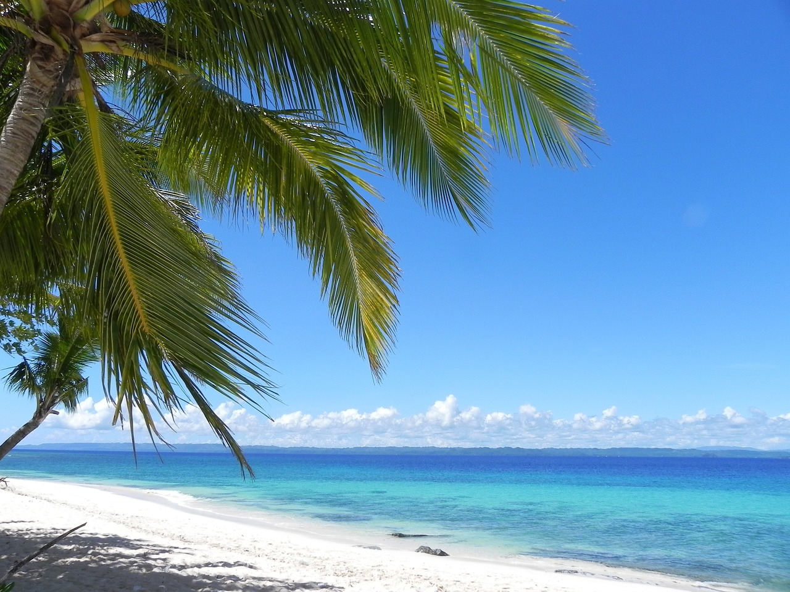
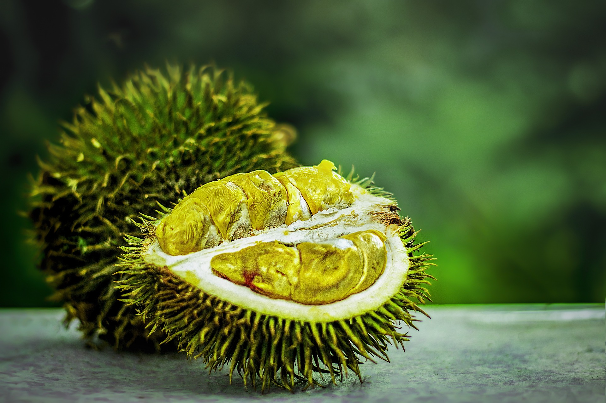

Figure 1: Mindanao is the second-largest island in the Philippines, located in the southern part of the country. It is known for its diverse culture, rich natural resources, and complex history. The island features a mix of urban centers and rural areas, with key cities including Davao, Cagayan de Oro, and Zamboanga. Davao City, in particular, is a major economic and cultural hub, often referred to as the "Crown Jewel of Mindanao.

Figure 2: The Philippines is a durian paradise most especially in the region of Mindanao, boasting a wide variety of beloved durian cultivars and integrating the fruit into everything from snacks to desserts. Durian festivals and advocacy campaigns celebrate its national treasure status.